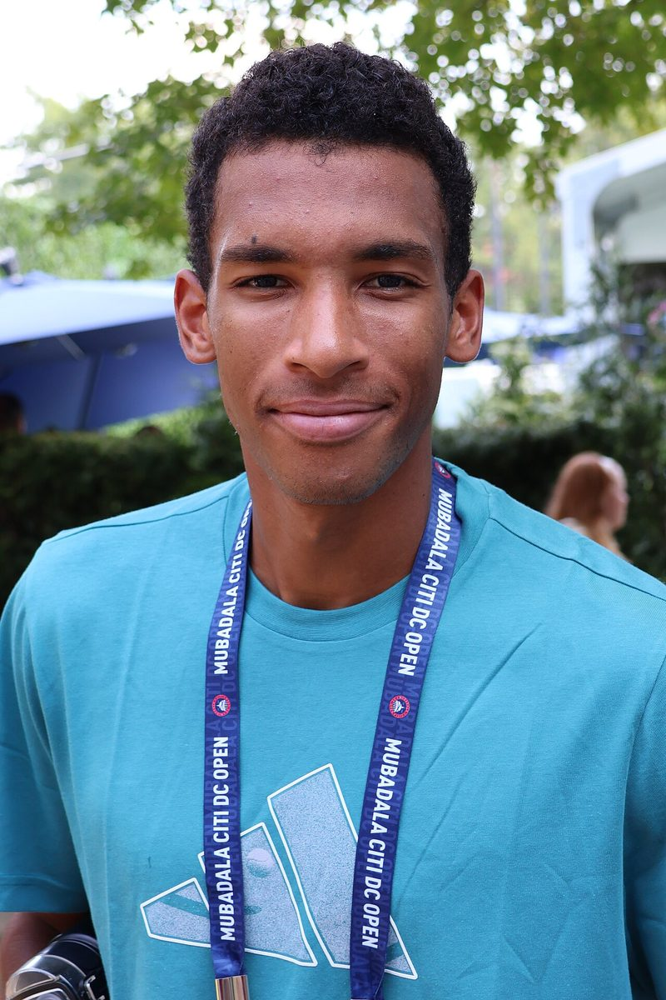

Lehecka and Machac Sweep Canada to Send Czechia Into Davis Cup Semi-Finals
Captain Tomas Berdych guides Czechs to their first Davis Cup final-four appearance in 12 years with a 2-0 quarter-final triumph in Bologna.

Czechia advanced to the Davis Cup semi-finals on Tuesday, November 24, 2026, defeating 2022 champions Canada 2-0 in the Final 8 quarter-finals at the indoor arena in Bologna, Italy. World No. 14 Jiri Lehecka sealed the tie with a 7-6 (4), 6-2 victory over Felix Auger-Aliassime after Tomas Machac opened proceedings by defeating Liam Draxl in three sets. The result ended a 12-year wait for Czechia, who had not reached the last four of the international men's team tournament since 2014.
Lehecka denies Auger-Aliassime on critical points
Auger-Aliassime, ranked 17th in the world, entered the match having won three of their previous four ATP encounters, including an indoor meeting in Dubai earlier this season. In Tuesday's decisive second rubber, the Canadian generated nine break points in the opening set, including a set point at 5-4, but Lehecka repelled every threat. The 25-year-old Czech forced a tiebreak, firing an ace to secure set point at 6-4 before closing out the 68-minute opener.

"It was a super tough match," Lehecka said in his on-court interview. "I was forced to play very well facing some break points and some tough situations. Felix is such a dangerous player in these conditions, so I'm very proud with the way I converted the chances I had."
Early breaks and Berdych's selection pay off
Lehecka maintained his momentum early in the second set, earning an immediate break of serve to establish a 3-0 lead. At 5-2, Auger-Aliassime saved a match point with a backhand winner, but Lehecka converted his second chance when the Canadian steered a backhand wide to conclude the contest in two hours. "It was a gruelling first set," Auger-Aliassime said. "Maybe there was just a bit of a dip on my end at the start of the second. I tried to fight back, but he was pretty locked in."
Czech captain Tomas Berdych, who won consecutive Davis Cup titles as a player in 2012 and 2013, had surprised observers by selecting world No. 59 Machac over top-20 compatriot Jakub Mensik for the opening singles match. Machac validated the gamble, overcoming 154th-ranked Draxl 6-2, 3-6, 6-2 in one hour and 55 minutes. Machac stormed to a 4-0 lead in the first set and broke Draxl for a 4-2 lead in the decider to hand Czechia early control.

Semi-final awaits against Italy or South Korea
Canada contested the tie without injured singles stars Denis Shapovalov and Gabriel Diallo, leaving Frank Dancevic's side unable to take the tie into a deciding doubles match.
Czechia now move on to Friday's semi-final in Bologna, where they will face the winner of Wednesday's quarter-final clash between defending champions Italy and South Korea. The South Korean team enters Wednesday seeking to reach a historic first Davis Cup semi-final.